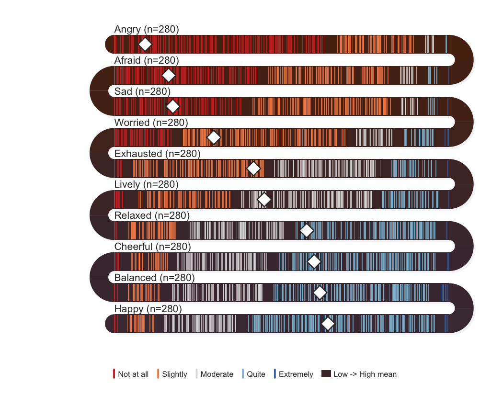
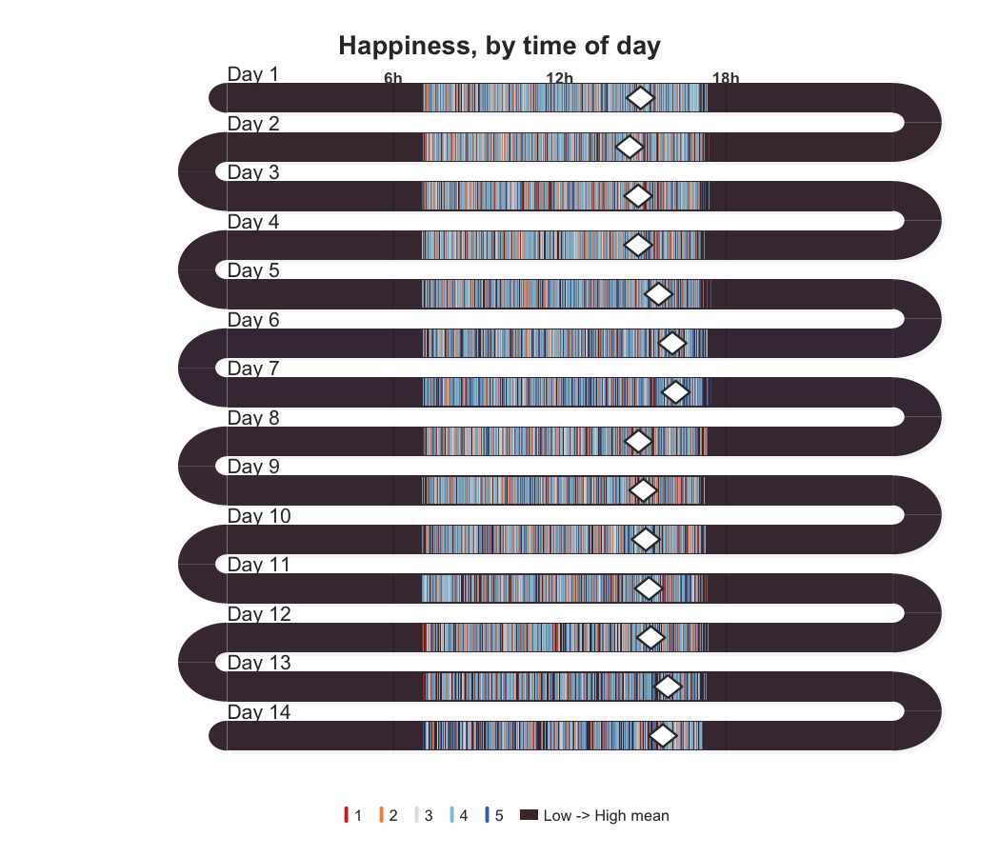
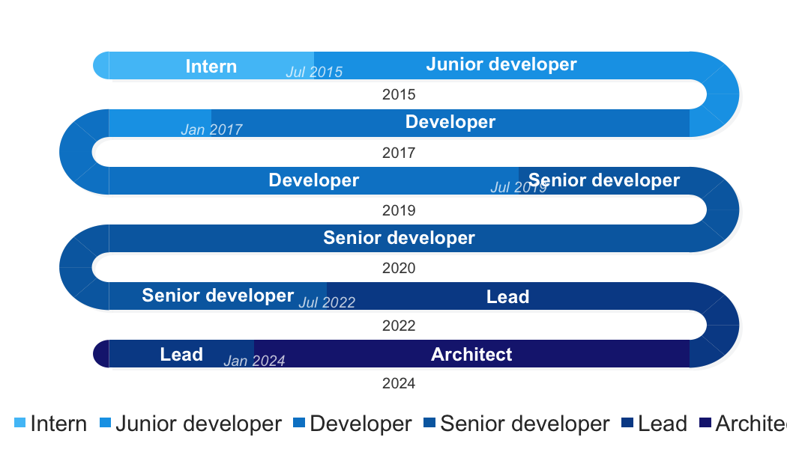

Vignettes and guides
Vignettes
Guides
- Categorical sequences and timelines
- Daily activity and continuous signals
- Palettes, reading order and layout
Case studies
Overview
The snakeplot R package draws serpentine plots of long ordered data: survey responses item by item, experience sampling ratings day by day, categorical state sequences, timelines of phases, and time-stamped daily activity. The ordered axis is divided into segments drawn as horizontal bands, and consecutive bands are joined by U-turn arcs, so a long record fits one panel while its order is kept. Survey displays show the response distribution of each item as ticks, dots or stacked bars, with the item mean, optional median, and the correlation between adjacent items. Experience sampling data can be drawn with one band per study day and each prompt placed at its time of day. All plots use base R graphics and the package has no dependencies beyond those that ship with R.
The serpentine layout
An ordered axis, whether of items, days or positions in a sequence, is cut into bands of equal length that share one scale. With flow = "snake" the reading direction alternates from band to band, as in boustrophedon writing, so the end of each band is adjacent to the start of the next. With flow = "natural" every band reads in the same direction, so a position within a band, such as a time of day, has the same horizontal location on every band. The first arrangement keeps the sequence continuous across the U-turns; the second aligns a shared axis down the page. Each band is a unit of comparison (an item, a day, a segment of a sequence), and the band shading, the U-turn arcs and the legend encode summaries of the units they join.
Installation
install.packages("snakeplot")
# development version
install.packages("remotes")
remotes::install_github("mohsaqr/snakeplot")Example data
The package includes three datasets from a 14-day experience sampling study of university students (Neubauer & Schmiedek, 2024), rescaled to a 1–5 scale: ema_emotions (280 students by 10 emotion items, each a student’s mean rating over the study), student_survey (the same students by 34 items in four constructs) and ema_beeps (11,474 answered prompts from 321 students, with day, time and two ratings).
Survey responses
Each item is a band. The widths of the colored zones are the shares of the response levels, the ticks are the individual responses, and the diamond marks the item mean. Sorting by the mean orders the items from the least to the most endorsed.
library(snakeplot)
survey_snake(ema_emotions, sort_by = "mean",
colors = snake_palette("ocean", n = 5),
level_labels = c("1" = "Not at all", "2" = "Slightly",
"3" = "Moderate", "4" = "Quite",
"5" = "Extremely"))
plot of chunk survey
Experience sampling by day
With var and day, beep-level data are drawn as one band per study day for one rating; timestamp places each answered prompt at its time of day.
survey_snake(ema_beeps, var = "happy", day = "day",
timestamp = "start_time",
colors = snake_palette("ocean", n = 5),
title = "Happiness, by time of day")
plot of chunk daily
Sequences and timelines
sequence_snake() folds an ordered categorical sequence into bands of blocks colored by state; timeline_snake() draws phases with start and end dates as monthly blocks with labelled transitions.
career <- data.frame(
role = c("Intern", "Junior developer", "Developer",
"Senior developer", "Lead", "Architect"),
start = c("2015-01", "2015-07", "2017-01", "2019-07", "2022-07",
"2024-01"),
end = c("2015-06", "2016-12", "2019-06", "2022-06", "2023-12",
"2024-12")
)
timeline_snake(career)
plot of chunk timeline
Authors and citation
snakeplot is written by Mohammed Saqr and Sonsoles López-Pernas. Mohammed Saqr maintains the package. Questions and bug reports can be submitted through the repository issue tracker. The package citation is available through citation("snakeplot").
The bundled data are derived from Neubauer, A. B., & Schmiedek, F. (2024). Approaching academic adjustment on multiple time scales. Zeitschrift für Erziehungswissenschaft, 27(1), 147–168. https://doi.org/10.1007/s11618-023-01182-8 (data, codebook, CC-BY 4.0).